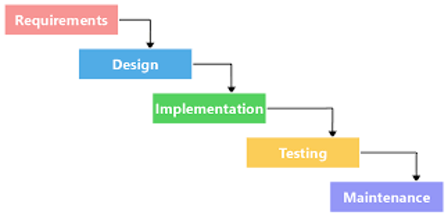
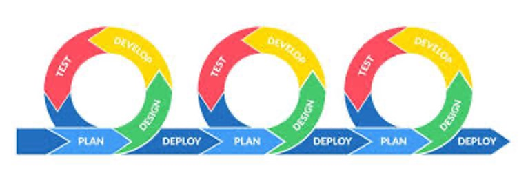

Agile Public Relations
In an era of 24-hour news, shrinking trend cycles and a rapidly changing social media environment, public relations teams must be able to adapt and adjust more quickly now than ever.
Traditionally, PR campaigns have been carried out following a waterfall process in which campaign activities are broken down into linear sequential phases, and each phase depends on the deliverables of the previous one. The RACE (research, action planning, communication, evaluation), ROPE (research, objectives, programming, evaluation) and RPIE (research, planning, implementation, evaluation) models all follow this process. Countless viral moments and trends could come and go while a PR team researches, plans, implements and evaluates even a short campaign.

The Agile process instead focuses on more short-term planning and constant data feedback, allowing PR teams to constantly adapt to the changing media landscape. Initially created for software development teams, the Agile process has since been adapted to other disciplines. It’s 12 core principles are outlined in The Agile Manifesto.

Rather than linear sequential phases, Agile projects consist of iterative sprints. The project is broken up into smaller pieces, which allows the team to work incrementally and test results after each sprint -- thus “build, measure, learn.”
Instead of assessing a campaign at completion, learning from the results and applying your findings to your next campaign, Agile allows you to assess each step of the campaign and make decisions about your next steps based on up-to-the-minute primary data.
The daily stand-up, a short meeting where people literally stand up, gives your team the opportunity to briefly check in and gauge progress, remove obstacles and stay on task. Its scope should be limited to the past 24 hours (since the previous stand-up) and the coming 24 hours (until the next stand-up) and anything else that needs immediate attention.
Team members should answer questions like:
- What have you done since our last stand-up?
- What is your plan until our next stand-up?
- What problems are you running into?
- What do you need from other team members?
Then, after each sprint, hold a sprint retrospective, a meeting to reflect on the sprint and learn. Give each team member an opportunity to talk about what they believe went well, what the problems were and what the team can implement to improve for the next sprint.